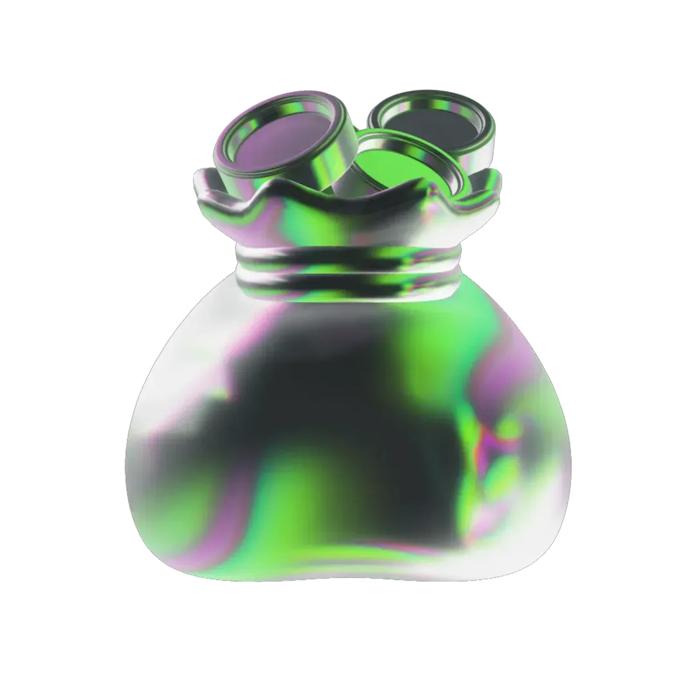

Información de Interés
Límites
Diarios
Conoce los límites diarios para realizar operaciones con N58.

Límites por tipo de operación
Montos máximos diarios por canal, actualizados según la normativa vigente.
PN = Persona Natural
PJ = Persona Jurídica
Montos en Bs.
| Tipo de Operación | N58 Banco Digital |
|---|---|
| Transferencia Interna | Sin Límites |
| Transferencia Otros Bancos PN | 2.300.000 |
| Transferencia Otros Bancos PJ | 11.100.000 |
| Puntos de Ventas | 1.200.000,00 |
| Pago Móvil | |
| Interna | Sin Límites |
| Otros Bancos | 1.200.000,00 |
| SMS | 100.000,00 |
| C2P | 1.200.000,00 |
PN= PERSONA NATURAL / PJ= PERSONA JURÍDICA